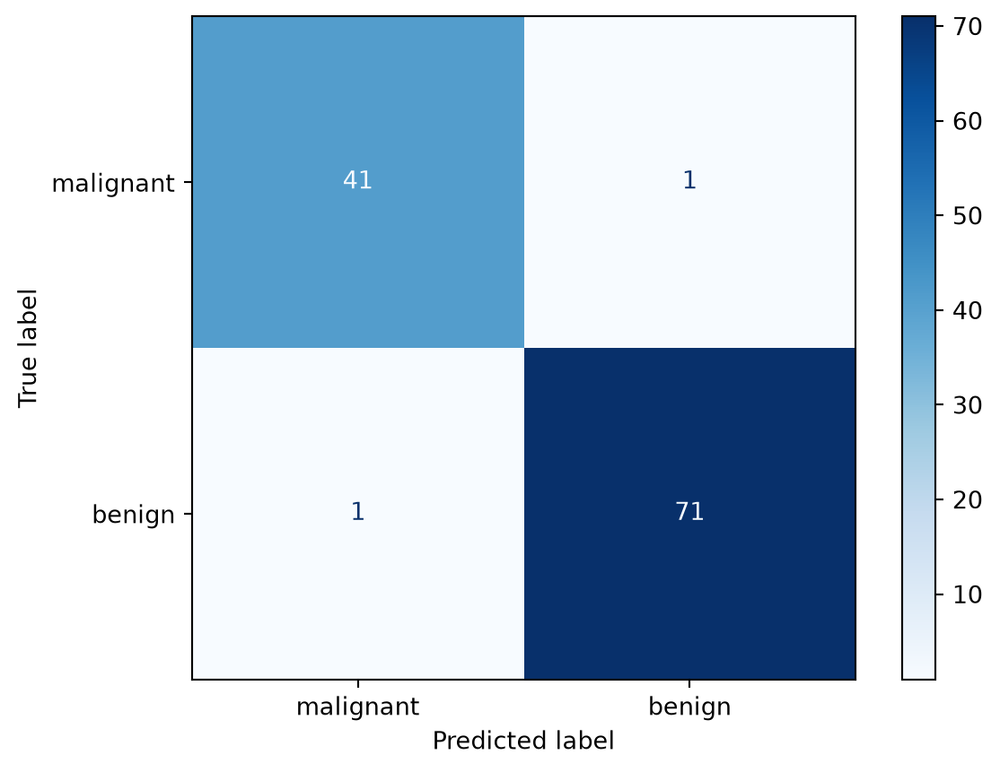
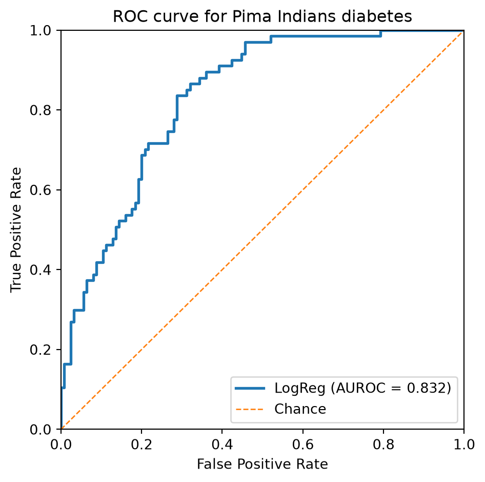

import numpy as np
import matplotlib.pyplot as plt
from sklearn.datasets import (
fetch_openml,
load_breast_cancer,
make_blobs,
)
from sklearn.linear_model import (
LogisticRegression as SKLogisticRegression,
)
from sklearn.metrics import (
ConfusionMatrixDisplay,
classification_report,
confusion_matrix,
roc_auc_score,
roc_curve,
)
from sklearn.model_selection import train_test_split
from sklearn.preprocessing import StandardScalerEvaluating logistic regression
CSI4106 Introduction to Artificial Intelligence
This notebook retains the logistic-regression implementation from Lecture 6 so that it can run independently. Lecture 7 repeats the implementation in one folded slide; this notebook provides the extended treatment of classification reports, confusion matrices, ROC curves, AUROC, and classification thresholds.
Setup
Logistic regression implementation
The class adds the intercept internally and follows the same binary-cross-entropy and batch-gradient-descent equations used in Lecture 6.
class LogisticRegression:
"""
Binary logistic regression trained with batch gradient descent.
Parameters
----------
learning_rate : float, default=0.1
Step size for gradient descent.
max_iter : int, default=1000
Number of gradient descent iterations.
Notes
-----
- This implementation expects binary labels {0, 1}.
- The intercept (bias) term is added internally during `fit`.
- For simplicity, there is no regularization and no early stopping.
"""
def __init__(
self,
learning_rate: float = 0.1,
max_iter: int = 1000,
):
if learning_rate <= 0:
raise ValueError("learning_rate must be positive.")
if max_iter <= 0:
raise ValueError("max_iter must be positive.")
self.learning_rate = learning_rate
self.max_iter = max_iter
# Attributes set after fitting
self._theta = None
self._loss_history = None
self._n_features = None
self._fitted = False
def fit(self, X: np.ndarray, y: np.ndarray) -> "LogisticRegression":
"""Fit the model parameters using gradient descent."""
X = self._as_2d_array(X, name="X")
y = self._as_1d_array(y, name="y")
if X.shape[0] != y.shape[0]:
raise ValueError(
"X and y must contain the same number of examples."
)
self._check_binary_labels(y)
n_examples, n_features = X.shape
self._n_features = n_features
Xb = self._add_intercept(X)
# Zero initialization works because the objective is convex.
self._theta = np.zeros(n_features + 1, dtype=float)
self._loss_history = []
for _ in range(self.max_iter):
probabilities = self._sigmoid(Xb @ self._theta)
gradient = (Xb.T @ (probabilities - y)) / n_examples
self._theta -= self.learning_rate * gradient
updated_probabilities = self._sigmoid(Xb @ self._theta)
self._loss_history.append(
self._bce_loss(updated_probabilities, y)
)
self._fitted = True
return self
def predict_proba(self, X: np.ndarray) -> np.ndarray:
"""Return predicted probabilities for the positive class."""
self._ensure_fitted()
X = self._as_2d_array(X, name="X")
self._ensure_same_n_features(X)
Xb = self._add_intercept(X)
return self._sigmoid(Xb @ self._theta)
def predict(
self,
X: np.ndarray,
threshold: float = 0.5,
) -> np.ndarray:
"""Return class predictions using a probability threshold."""
if not 0 <= threshold <= 1:
raise ValueError("threshold must be between 0 and 1.")
return (self.predict_proba(X) >= threshold).astype(int)
@property
def intercept_(self) -> float:
"""Return the fitted intercept."""
self._ensure_fitted()
return float(self._theta[0])
@property
def coef_(self) -> np.ndarray:
"""Return a copy of the fitted feature coefficients."""
self._ensure_fitted()
return self._theta[1:].copy()
def get_loss_history(self) -> list:
"""Return a copy of the loss values collected during fitting."""
self._ensure_fitted()
return list(self._loss_history)
@staticmethod
def _sigmoid(z: np.ndarray) -> np.ndarray:
"""Compute the sigmoid without numerical overflow."""
z = np.asarray(z, dtype=float)
result = np.empty_like(z)
positive = z >= 0
result[positive] = 1.0 / (1.0 + np.exp(-z[positive]))
exp_z = np.exp(z[~positive])
result[~positive] = exp_z / (1.0 + exp_z)
return result
@staticmethod
def _bce_loss(probabilities: np.ndarray, y: np.ndarray) -> float:
probabilities = np.clip(probabilities, 1e-12, 1.0 - 1e-12)
return float(
-np.mean(
y * np.log(probabilities)
+ (1 - y) * np.log(1 - probabilities)
)
)
@staticmethod
def _as_2d_array(X, name="X") -> np.ndarray:
X = np.asarray(X, dtype=float)
if X.ndim != 2:
message = (
f"{name} must be a 2D array of shape "
"(n_samples, n_features)."
)
raise ValueError(message)
return X
@staticmethod
def _as_1d_array(y, name="y") -> np.ndarray:
y = np.asarray(y, dtype=float)
if y.ndim != 1:
message = f"{name} must have shape (n_samples,)."
raise ValueError(message)
return y
@staticmethod
def _check_binary_labels(y: np.ndarray) -> None:
if not np.array_equal(np.unique(y), np.array([0.0, 1.0])):
raise ValueError(
"y must contain both binary labels 0 and 1."
)
@staticmethod
def _add_intercept(X: np.ndarray) -> np.ndarray:
return np.column_stack([np.ones(X.shape[0]), X])
def _ensure_fitted(self) -> None:
if not self._fitted or self._theta is None:
raise RuntimeError(
"Call fit(X, y) before using the fitted model."
)
def _ensure_same_n_features(self, X: np.ndarray) -> None:
if X.shape[1] != self._n_features:
message = (
f"X has {X.shape[1]} features; "
f"expected {self._n_features}."
)
raise ValueError(message)Synthetic evaluation example
We begin with a two-feature dataset so that the predicted probabilities can be evaluated without introducing a complex application domain.
X, y = make_blobs(
n_samples=1000,
n_features=2,
centers=2,
cluster_std=5,
random_state=42,
)
# Split into train and test sets
X_train, X_test, y_train, y_test = train_test_split(
X, y, test_size=0.3, random_state=42, stratify=y
)Training and fixed-threshold predictions
model = LogisticRegression(learning_rate=0.1, max_iter=500)
model.fit(X_train, y_train)
y_pred = model.predict(X_test)
print("Classification Report:\n")
print(classification_report(y_test, y_pred))Classification Report:
precision recall f1-score support
0 0.84 0.87 0.86 150
1 0.86 0.84 0.85 150
accuracy 0.85 300
macro avg 0.85 0.85 0.85 300
weighted avg 0.85 0.85 0.85 300
Implementing ROC and AUROC
def compute_roc_curve(y_true, y_scores):
"""Compute ROC points by sweeping the classification threshold."""
y_true = np.asarray(y_true)
y_scores = np.asarray(y_scores, dtype=float)
thresholds = np.r_[np.inf, np.sort(np.unique(y_scores))[::-1]]
tpr_list, fpr_list = [], []
for threshold in thresholds:
# Classify as positive if predicted probability >= threshold
y_pred = (y_scores >= threshold).astype(int)
tp = np.sum((y_true == 1) & (y_pred == 1))
fn = np.sum((y_true == 1) & (y_pred == 0))
fp = np.sum((y_true == 0) & (y_pred == 1))
tn = np.sum((y_true == 0) & (y_pred == 0))
tpr_list.append(tp / (tp + fn))
fpr_list.append(fp / (fp + tn))
return np.array(fpr_list), np.array(tpr_list), thresholdsComputing AUROC
def compute_auroc(fpr, tpr):
"""
Compute the area under the ROC curve using the trapezoidal rule.
fpr: array of false positive rates
tpr: array of true positive rates
"""
return np.trapezoid(tpr, fpr)AUROC measures ranking quality. It equals the probability that a randomly selected positive example receives a higher score than a randomly selected negative example, subject to the metric’s treatment of ties. Random ranking has an expected AUROC of 0.5, while a systematically reversed ranking can produce a value below 0.5.
ROC Curve
Code
# Compute predicted probabilities for the positive class on the test set
y_probs = model.predict_proba(X_test)
# Compute the ROC curve (FPR and TPR for each threshold)
fpr, tpr, thresholds = compute_roc_curve(y_test, y_probs)
auroc_value = compute_auroc(fpr, tpr)
sklearn_auc = roc_auc_score(y_test, y_probs)
print(f"Manual AUROC: {auroc_value:.3f}")
print(f"scikit-learn AUROC: {sklearn_auc:.3f}")
# Plot the ROC curve
plt.figure(figsize=(8, 6))
plt.plot(
fpr,
tpr,
color="blue",
lw=2,
label=f"ROC curve (AUROC = {auroc_value:.2f})",
)
plt.plot(
[0, 1],
[0, 1],
color="gray",
lw=1,
linestyle="--",
label="Random classifier",
)
plt.xlabel('False Positive Rate')
plt.ylabel('True Positive Rate')
plt.title('Receiver Operating Characteristic (ROC) Curve')
plt.legend(loc="lower right")
plt.show()Manual AUROC: 0.938
scikit-learn AUROC: 0.938
Breast cancer dataset
This example uses scikit-learn’s breast-cancer dataset. In this dataset, label 0 denotes a malignant tumour and label 1 denotes a benign tumour.
# Goal: Classify tumours as malignant (0) or benign (1)
# Dataset: sklearn.datasets.load_breast_cancer
# Model: Logistic Regression (scikit-learn)
# 1. Load dataset
data = load_breast_cancer()
X, y = data.data, data.target
print(f"Dataset shape: {X.shape}, Labels: {np.bincount(y)}")
print("Feature names (first 5):", data.feature_names[:5])
# 2. Train/test split
X_train, X_test, y_train, y_test = train_test_split(
X, y, test_size=0.2, random_state=42, stratify=y
)
# 3. Scale features (important for gradient-based methods)
scaler = StandardScaler()
X_train_scaled = scaler.fit_transform(X_train)
X_test_scaled = scaler.transform(X_test)
# 4. Train Logistic Regression
clf = SKLogisticRegression(max_iter=5000, random_state=42)
clf.fit(X_train_scaled, y_train)
# 5. Evaluate
y_pred = clf.predict(X_test_scaled)
print("\nClassification Report:")
print(
classification_report(
y_test,
y_pred,
target_names=data.target_names,
zero_division=0,
)
)
# Confusion matrix
cm = confusion_matrix(y_test, y_pred, labels=clf.classes_)
disp = ConfusionMatrixDisplay(
confusion_matrix=cm,
display_labels=data.target_names,
)
disp.plot(cmap="Blues")
plt.show()Dataset shape: (569, 30), Labels: [212 357]
Feature names (first 5): ['mean radius' 'mean texture' 'mean perimeter' 'mean area'
'mean smoothness']
Classification Report:
precision recall f1-score support
malignant 0.98 0.98 0.98 42
benign 0.99 0.99 0.99 72
accuracy 0.98 114
macro avg 0.98 0.98 0.98 114
weighted avg 0.98 0.98 0.98 114

Pima Indians diabetes dataset
This dataset illustrates how the classification threshold controls the trade-off between the true-positive and false-positive rates. The reported rates are computed from the current train/test split rather than fixed in the text.
# 1) Load the Pima dataset using its stable OpenML identifier.
dataset = fetch_openml(data_id=37, as_frame=True)
X = dataset.data
y = dataset.target.astype(str).str.lower().map(
{
"tested_negative": 0,
"tested_positive": 1,
"0": 0,
"1": 1,
}
)
if y.isna().any():
raise ValueError("The OpenML target labels were not recognized.")
y = y.astype(int)
print(f"Dataset shape: {X.shape}, Labels: {np.bincount(y)}")
# 2) Train/test split (stratified for class balance)
X_train, X_test, y_train, y_test = train_test_split(
X, y, test_size=0.25, random_state=42, stratify=y
)
# 3) Scale features (helps LR optimization)
scaler = StandardScaler()
X_train_s = scaler.fit_transform(X_train)
X_test_s = scaler.transform(X_test)
# 4) Train Logistic Regression
clf = SKLogisticRegression(max_iter=2000, random_state=42)
clf.fit(X_train_s, y_train)
# 5) ROC curve and AUROC
y_score = clf.predict_proba(X_test_s)[:, 1]
fpr, tpr, thresholds = roc_curve(y_test, y_score)
auroc = roc_auc_score(y_test, y_score)
# Report the operating point closest to a target TPR.
target_tpr = 0.85
idx = np.argmin(np.abs(tpr - target_tpr))
print(f"Closest TPR: {tpr[idx]:.3f}")
print(f"Corresponding FPR: {fpr[idx]:.3f}")
print(f"Threshold: {thresholds[idx]:.3f}")
# 6) Plot
plt.figure(figsize=(5, 5))
plt.plot(fpr, tpr, lw=2, label=f"LogReg (AUROC = {auroc:.3f})")
plt.plot([0, 1], [0, 1], lw=1, linestyle="--", label="Chance")
plt.xlim(0, 1)
plt.ylim(0, 1)
plt.xlabel("False Positive Rate")
plt.ylabel("True Positive Rate")
plt.title("ROC curve for Pima Indians diabetes")
plt.legend(loc="lower right")
plt.tight_layout()
plt.show()Dataset shape: (768, 8), Labels: [500 268]
Closest TPR: 0.851
Corresponding FPR: 0.312
Threshold: 0.271